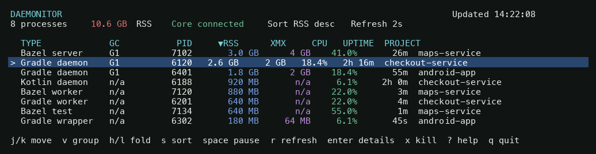
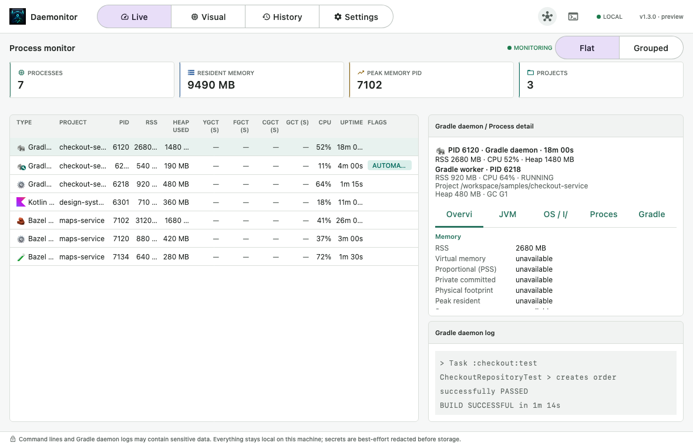
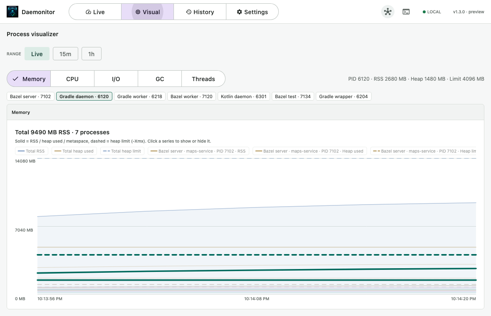
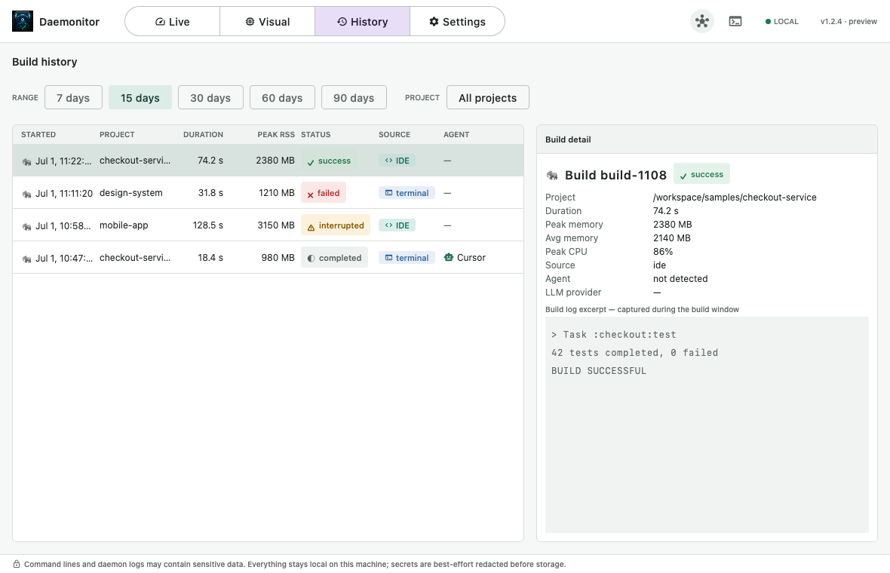

CLI

macOS · Windows · Linux
Daemonitor is like Activity Monitor for local build processes — Gradle daemons, wrappers, Kotlin daemons, and workers alongside Bazel servers, tests, and workers — with RSS, CPU, heap, and uptime on the machine where the build runs.
Live observation is zero-lock for Bazel (never calls bazel info /
dump). The CLI is a Native Go binary with no JDK; the desktop app is a
separate packaged JVM application for the same local core. History stays in SQLite
on your disk.
Gradle history comes from daemon logs (including IDE or agent source). Bazel history is opportunistic when a build already emits local BEP — Daemonitor never enables BEP itself. Laptop or SSH; no cloud account.
Go read the CLI options for more, or grab packages from GitHub Releases. Gradle and Bazel share Live Monitor, Visual timelines, Build History, and the CLI hierarchy.
Same local process data across every surface: CLI, desktop Live Monitor, Visual timelines, and Build History.
CLI — live process table for Gradle and Bazel. Bubble Tea TUI; No JDK required; works over SSH.




Desktop Live Monitor lists Gradle daemons, wrappers, Kotlin daemons, and workers alongside Bazel servers, tests, and workers — with RSS, CPU, uptime, and memory-pressure badges.
Memory, CPU, I/O, and GC modes with live / 15m / 1h windows so concurrent Gradle and Bazel processes are easy to compare.
Recent Gradle builds with duration, outcome, peak resources, and coding-agent attribution. Filter by tool for opportunistic Bazel BEP rows when your builds already write them.
Bubble Tea TUI over SSH or on headless machines. Native Go binary; starts
daemonitor-cored when needed and does not require a JDK. The desktop
app remains a separate packaged JVM application. Press v to group
descendant workers under their daemon or Bazel server; h/l
fold or expand a group while keeping individual process rows available.
brew tap cdsap/tap
brew install daemonitor-cli
daemonitor-cliNo JDK required. Flag reference: CLI options.
Local-first by design. History and process data stay on your computer.
Optional local, read-only MCP so compatible tools can inspect retained build history and currently visible Gradle and Bazel processes — without leaving the machine.
Desktop packages for macOS, Windows, and Linux. CLI via Homebrew or the release zip.
daemonitor-cli
Desktop links open the latest GitHub Release. CLI steps are in the CLI section.